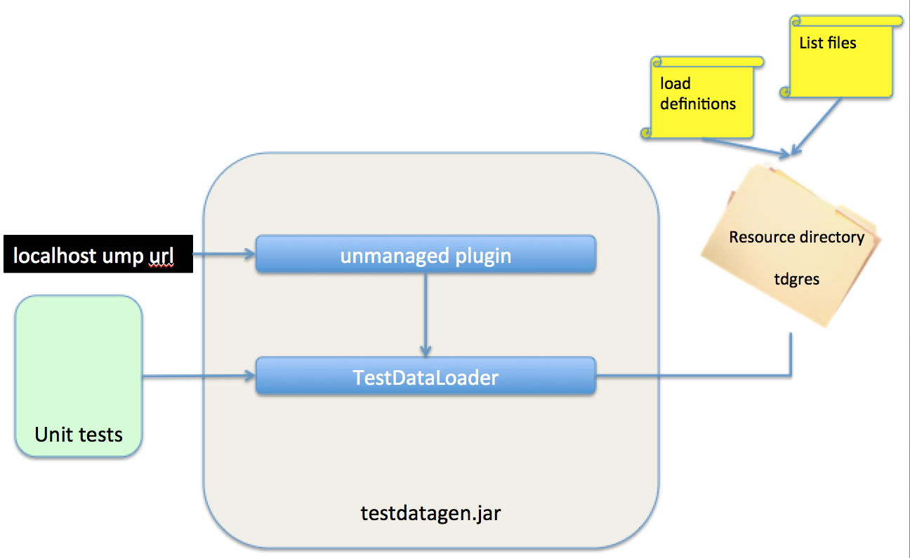

Structure Data Generator |
The Data Generator functionality is distributed as a jar file. You can use it as an unmanaged plugin or use it in you java code for test purposes. The TestDataLoader uses a resource directory "ddgres" to load load definitions and if used list files (files containing a domain specific list). For an unmanged plugin the ddgres directory has to be located in the neo4j plugins directory. If you run the test data generator in a Unit test program you have to specify the parent directory of the ddgres directory. The distribution of this tool also has a ddgres directory that contains several files which are used for the faker functions. The logic is always called with a load definition file reference. For an unmanged pluging this file name has to be specified in the URL. |
|  |
Processing Flow |
| The Test Data Loader processes the load definition in the following order: |
|